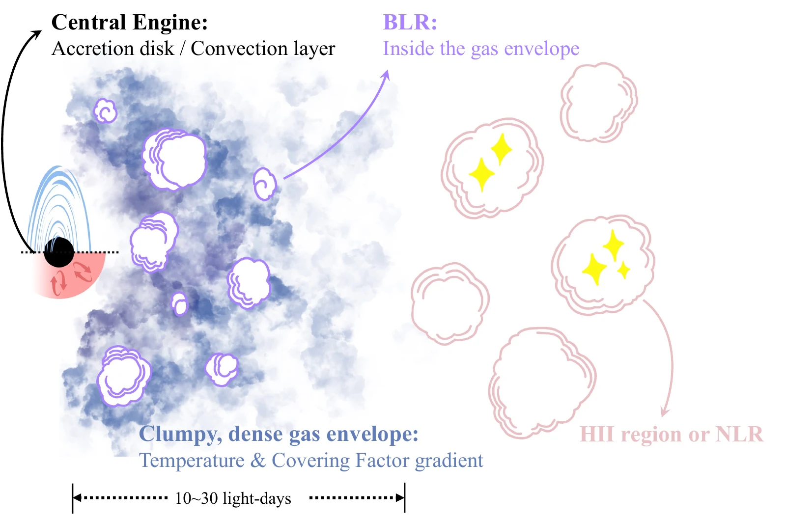
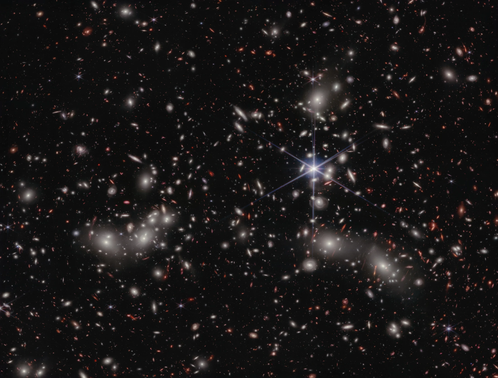
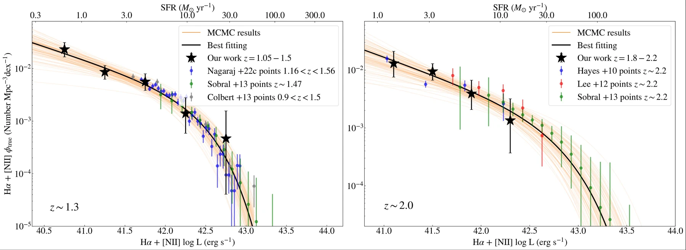
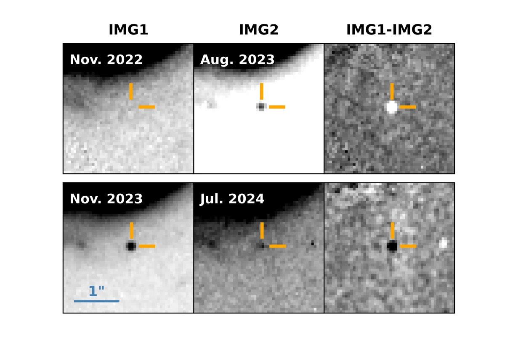

JWST / NIRSpec · ApJ, 2026
The nature of little red dots
Using resolved line profiles to investigate the origin of LRD emission and the environments of growing black holes.
Explore this research →
Postdoctoral researcher · UCAS, Beijing
Black holes, galaxies,
and the time-domain Universe.
Investigating their physical properties and evolution with space-based spectroscopy and imaging.
Abell 2744 · JWST / NIRCam
NASA, ESA, CSA, I. Labbe, R. Bezanson, A. Pagan
Image source and credits
Recent research
From the central engines of little red dots to faint galaxies and distant stellar explosions.

JWST / NIRSpec · ApJ, 2026
Using resolved line profiles to investigate the origin of LRD emission and the environments of growing black holes.
Explore this research →
GLASS-JWST · ApJ, 2026
Measuring the faint end of the Hα luminosity function with NIRISS spectroscopy and gravitational lensing.
Explore this research →
PLATE · Preprint, 2026
Discovering and characterizing PLATE-23a through deep, multi-epoch imaging of the Abell 2744 field.
Explore this research →My work connects quasar selection, galaxy population statistics, and spectroscopic and time-domain diagnostics.